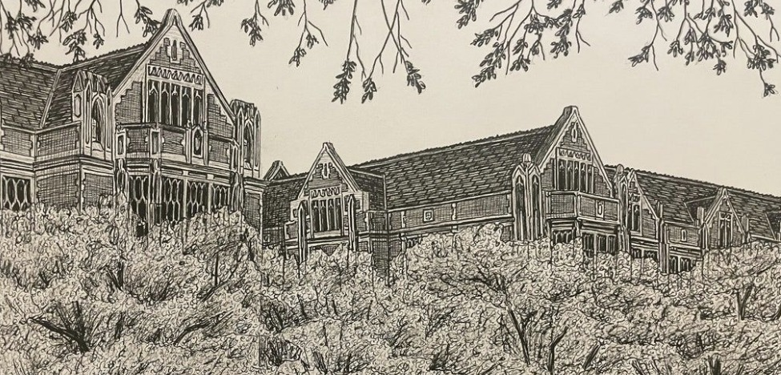
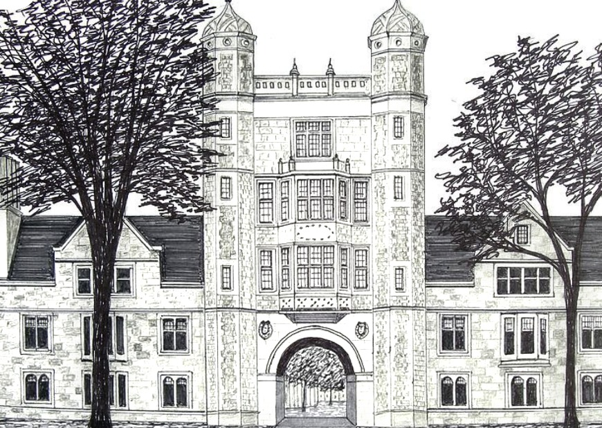

Saara Uthmaan
UX research & design · University of Michigan School of Information
Open to summer 2027 UX research & design internships
Begin the path ↓Hi, I'm Saara · UX research & design
Everyone deserves to find their way.
I aim to understand how people navigate technology, where they get stuck, and what they need to move forward. Through user research and thoughtful design, I turn those insights into experiences that make the way clearer.

Undergraduate · 2026
You are here Graduate Student · 2026–202801 / Selected work
Case studies
02 / About me
A wayfinder, in design and in life.
My earliest memory is guiding my older sister home from school in Saudi Arabia when I was six. I've been the wayfinder for the people around me ever since. Growing up as a third culture kid across three continents, I learned to notice differences and small frictions others walk past. Now I design to guide people through the frictions of emerging technologies, centering human flourishing.
I'm a graduate student at the University of Michigan School of Information, studying UX research and design. As technology changes how we learn, I want to make sure no one gets left behind. I've researched how beginners learn with AI, co-designed support for students in computing*, and I'm now designing Mosaic, an app that helps homeschooled kids find their people.
* This work received a Best Paper Honorable Mention at ICER 2026, the ACM International Computing Education Research conference. Read the paper ↗
03 / Off the clock
Play & side projects
Writings, ideas, and things I make room for. Half-formed on purpose.